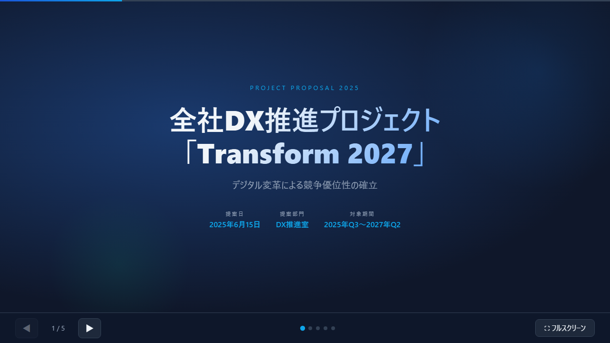

第4章 資料をHTMLにすると何が変わるか
📂 本章のサンプルファイル:ch04_animated_slides.html
ブラウザで開くと、本章で解説するHTMLコンテンツを実際に操作できます。
本書サポートサイトからダウンロードしてください。
はじめに
あなたが作った資料の中で、「もっと使いやすくできたのに」と感じたものはありますか？
40枚のPowerPointを送ったのに「どこが要点かわからない」と言われた提案書。配布した月次報告書を誰も最後まで読んでいない気がする、という感覚。何度更新しても「古いバージョンを使っている人がいる」問題が解決しないマニュアル。
これらの問題は、内容の問題ではなく、形式の問題である場合がほとんどです。どれだけ優れた内容が書かれていても、読み手にとって読みにくい形式で届いては、伝わりません。
この章では、提案書・報告書・マニュアル・プレゼンという四つの代表的な業務成果物を取り上げ、それぞれをHTMLにすることで何が変わるかを、具体的な場面を通じて示します。
資料をHTMLにすることで変わるのは、大きく三つです。届け方、読まれ方、そして更新のしやすさ。この章を読み終えるころには、「面白そう」という感覚が「実際に使えそう」という確信に変わっているはずです。
4-1 「提案書」をHTMLにする
スクロール型提案書という新しい形式
💡 AIへの依頼例
【目的】クライアントに送るスクロール型のHTMLシステム導入提案書を作りたい
【含める要素】エグゼクティブサマリー（3行）、現状課題、提案内容、導入スケジュール（タイムライン）、費用と効果、次のステップ
【スタイル】ビジネス向け、信頼感のあるネイビー×ホワイトの配色
【出力形式】完全なHTMLファイルとして出力してください
このプロンプトをそのままClaude/ChatGPT/Geminiに貼り付けて使えます。
提案書はPowerPointで作るもの——そう思い込んでいる方も多いのではないでしょうか。
しかし少し立ち止まって考えてみてください。受け取った側は、その40枚のスライドを本当に最後まで読んでいるでしょうか。
PowerPointのスライドは「発表すること」を前提に設計されています。スクリーンに映して、発表者が話しながら進める——という体験のために最適化されています。しかしそれは、スライドを単独でメール添付して送ったとき、読み手が「自分で読む」体験には最適化されていません。
スライドを1枚ずつ「送る」という操作は、読むリズムを読み手に与えず、どこが重要でどこが補足なのかもわかりにくくさせます。40枚の提案書を受け取った相手が、最初の10枚で概要を掴もうとするのは自然な行動です。
HTMLのスクロール型提案書はこの問題を根本から変えます。縦にスクロールするページ構成で、ストーリーを上から下へと自然に読み進められる設計になっています。章立て・要約・詳細・補足という情報の階層構造が、スクロールという直感的な操作で体験できます。
ビフォーアフター：40枚のPowerPoint提案書 vs. HTML提案書
コンサルタントが作る典型的な40枚の提案書をHTMLに変換するとどうなるか、具体的に見てみましょう。
PowerPoint版では、40枚のスライドがそれぞれ独立したページとして存在します。読み手はページをめくりながら全体像を把握しなければなりません。「このスライドは何のためにあるの？」という疑問が生まれやすく、発表者なしには文脈がわかりにくい構成になりがちです。
HTML版では、同じ内容が一つのページに縦断的に配置されます。最上部にエグゼクティブサマリーとして「この提案の核心」を3行で示し、その下にスクロールするにつれて詳細情報が展開されます。急いでいる読み手は最初のセクションだけ読めば要旨を掴め、詳細を知りたい読み手はスクロールを続ければよい——という「読み手の時間を尊重する設計」になります。
リンク・参照・補足資料の埋め込み
HTML提案書が「生きた提案書」と呼ばれるのは、他の情報へつながる能力を持つからです。
PowerPointのスライドに「詳細は別添のExcelを参照」と書いても、受け取った側はExcelを別途開く必要があります。HTML提案書なら、「詳細はこちら」というリンクを本文中に埋め込むことで、クリック一つで関連情報にアクセスできます。
さらに、動画の埋め込みもHTML提案書の大きな強みです。製品やシステムの動作説明は、テキストと画像だけでは限界があります。しかしHTML提案書なら、30秒のデモ動画をページ内に埋め込み、提案書を読む流れの中で自然に視聴してもらえます。「動画を見てください」という別の指示を出す必要がなく、読み手の集中を途切れさせません。
プロンプト例：動画埋め込み付きHTMLシステム提案書
以下の内容でシステム導入提案書のHTMLページを作成してください。
【全体構成】
1. エグゼクティブサマリー（3つの要点）
2. 現状課題の整理
3. 提案システムの概要（YouTube動画を埋め込む予定）
4. 導入スケジュール（タイムライン図）
5. 費用と期待効果
6. 次のステップ
【デザイン】
・セクションごとに背景色を交互に変えて読みやすく
・スクロールするとセクションが少しフェードインするアニメーション
・モバイルでも読めるレスポンシブデザイン
・各セクションにアンカーリンク付きの目次を最上部に表示「見る人」によって見せ方を変える
💡 AIへの依頼例
【目的】タブ切り替えで「経営者向け」「技術担当向け」「現場担当向け」の3つの視点を切り替えられるHTML提案書を作りたい
【含める要素】共通ヘッダー（提案タイトル・日付）、タブナビゲーション、各タブに対応したコンテンツエリア（費用対効果 / 技術仕様 / 操作手順）
【スタイル】ビジネス向け、シンプルでクリーンなレイアウト
【出力形式】完全なHTMLファイルとして出力してください
このプロンプトをそのままClaude/ChatGPT/Geminiに貼り付けて使えます。
HTML提案書のもう一つの強みは、読み手が自分の関心に応じて情報を展開できる設計にできることです。
タブ切り替えを使えば、「技術担当者向けの詳細仕様」「経営者向けの費用対効果」「現場担当者向けの操作手順」という三つの視点を一つのページに共存させることができます。受け取った人が自分に関係するタブをクリックして読む——これはPowerPointでは実現できない、HTMLならではの体験です。
アコーディオンメニューを使えば、補足情報・用語集・詳細説明を折りたたんだ状態にしておき、興味のある読み手だけが展開できる構成にすることもできます。「細かい説明で本筋が見えにくくなる」という提案書の典型的な問題を、構造的に解決できます。
[コラム] 読まれる資料と読まれない資料の差
組織内で共有される資料のうち、実際に最後まで読まれるのは何割程度でしょうか。ある研究では、配布された報告書の完読率は20〜30%程度ともいわれます。これは内容の問題だけではありません。読み始めてから読み終わるまでのコストが高すぎる、つまり「形式の問題」でもあります。HTMLのスクロール型資料は、読み手が自分のペースで読み進め、必要な部分に素早くアクセスできる設計にすることで、「読まれない資料」を「読まれる資料」に変えます。形式が内容の届き方を決める——これはデジタル時代に特に重要な視点です。
4-2 「報告書」をHTMLにする
数字がリアルタイムで動く報告書
💡 AIへの依頼例
【目的】KPIの数値が0からカウントアップするアニメーション付きの月次報告HTMLページを作りたい
【含める要素】売上・新規顧客数・目標達成率の3つのKPIカード（ページを開いた瞬間に数値が0からカウントアップするアニメーション）、前月比の増減表示（増加は緑、減少は赤）
【スタイル】ビジネス向け、ダッシュボード風のモダンなレイアウト
【出力形式】完全なHTMLファイルとして出力してください
このプロンプトをそのままClaude/ChatGPT/Geminiに貼り付けて使えます。
毎月末、全事業部のKPIをExcelにまとめて配布する——そういう運用をしている組織は今でも多くあります。しかしExcelを配布する報告書運用には、いくつかの根本的な問題が潜んでいます。
まず、配布した時点からファイルの数字は「固定」されます。翌日に数字に誤りが見つかっても、修正したファイルを再配布しなければ全員に届きません。配布先の誰かが古いファイルを参照していても気づくことができません。
HTML形式の報告書はこの問題を解決します。URLで管理されているHTMLレポートは、管理者が更新すると、次回アクセスした全員が最新版を見ることができます。「最新版はどれ？」という問いが不要になるのです。
さらに進んだ活用として、データをリアルタイムに近い形で更新するHTMLレポートも、生成AIの助けを借りれば構築が可能です。社内システムやスプレッドシートと連携させることで、担当者が手動で集計・入力しなくても数字が自動的に更新されるレポートが実現できます。もちろん、このレベルの仕組みには技術的なサポートが必要ですが、「どういうものを作りたいか」を明確にさえできれば、実現のための会話ができます。
読み手が自分でフィルタリングできる
HTML報告書が変えるのは、更新の仕組みだけではありません。「全員が同じ表を見る」という報告書の基本設計そのものを問い直すことができます。
全社の月次報告書を想像してください。全事業部の売上・コスト・KPI達成率が1枚の表にまとまっています。営業本部のマネージャーにとっては、他の事業部の数字はほとんど関係ありません。しかし同じExcelシートに全部入っているため、自分の担当部分を探すだけでも少し手間がかかります。
HTMLのインタラクティブ報告書では、この問題を「フィルタリング機能」で解決できます。
タブ切り替えフィルタリング報告書の活用場面
各事業部のマネージャーが自分の数字だけを見るシナリオです。ページ上部に「営業本部」「開発部門」「管理部門」というタブが並んでいます。自分の担当タブをクリックするだけで、表示される数字がフィルタリングされ、自分の担当部門のKPIだけが表示されます。さらに、「月別推移」「前年同期比」「担当者別」といったビューを切り替えることも、タブひとつで実現できます。
これは読み手一人ひとりに「自分のための報告書」という体験を与えます。同じデータを、見る人に応じて最適な形で提示できる——これは物理的な紙の報告書にも、メール添付のExcelにも実現できないことです。
プロンプト例：タブ切り替えフィルタリング報告書
以下のデータを使って、事業部別にフィルタリングできる
月次報告HTMLページを作成してください。
【機能要件】
・「全社」「営業部」「開発部」「管理部」の4つのタブで切り替え
・各タブで表示：KPI達成率サマリー、詳細データ表、前月比の変化
・達成率100%以上はグリーン、80%以上はイエロー、80%未満はレッドで色表示
・印刷ボタンを付ける（印刷時は現在表示中のタブの内容のみ印刷）
【データ】
（ここにCSVデータを貼り付ける）4-3 「マニュアル」「手順書」をHTMLにする
目次・検索・ページ内ジャンプで使いやすくなる
社内マニュアルが読まれない問題を抱えている組織は少なくありません。「読まれないマニュアル」の多くは、内容が悪いのではなく、「使いにくい」のです。
100ページのWordマニュアルを想像してください。知りたいことが何ページに書いてあるか、目次を見ながら探し、ページを手動でスクロールして見つける——この体験は、急いでいるときや特定の情報だけを確認したいときに非常にストレスがかかります。
HTMLマニュアルは、三つの点でこの問題を根本的に解決します。
①目次からのページ内ジャンプ
HTMLマニュアルの左サイドバー（あるいはページ上部）に固定された目次は、クリックするだけで該当セクションに瞬時にジャンプします。「3-2 承認手順の変更」を探すときに、ページを一枚ずつめくる必要がありません。スクロールしても目次は画面に固定されているため、どこに何が書いてあるかを常に確認しながら読めます。
②ページ内キーワード検索
HTMLマニュアルにテキスト入力ボックスを設置し、キーワードで検索できる機能をつけると、「申請書」「キャンセル方法」「システムエラー」などの言葉で目的のページを即座に見つけられます。Wordのドキュメントでも「Ctrl+F」で検索できますが、HTMLなら検索結果の一覧表示・ハイライト表示・関連ページへのリンクなど、より使いやすい検索体験を提供できます。
③URLによるセクション直接アクセス
HTMLマニュアルの特定セクションには、URLのアンカー（#記号以降の文字列）を使って直接リンクを張ることができます。「申請手順はこのURLを見てください」とチャットで送るだけで、相手は目的のセクションをすぐに開けます。「Wordのマニュアルの何ページ目に書いてあります」という案内よりずっとスムーズです。
更新が容易で「常に最新版」を届けられる
💡 AIへの依頼例
【目的】社内の申請手順をHTML化して、誰でも検索・参照できるオンラインマニュアルにしたい
【含める要素】固定サイドバーの目次（クリックで該当セクションへスムーススクロール）、キーワード検索ボックス（マッチ箇所をハイライト表示）、注意事項の黄色警告ボックス、FAQのアコーディオン形式折りたたみ、フッターへの最終更新日表示
【スタイル】ビジネス向け、読みやすいドキュメントスタイル
【出力形式】完全なHTMLファイルとして出力してください
このプロンプトをそのままClaude/ChatGPT/Geminiに貼り付けて使えます。
マニュアルの最大の悩みの一つが「更新の難しさ」です。
Wordで作られたマニュアルは、更新するたびに新しいファイルが生まれます。それをPDFに変換し、社内の共有フォルダに「手順書v2.3_最終版_修正済み.pdf」という名前で保存する——そのうち「最新版はどれ？」という混乱が起きます。古いバージョンを参照している人に気づく手段もありません。
HTMLマニュアルはURLで管理されます。URLは変わらず、内容だけが更新されます。社員はブックマークしたURLを開くだけで、常に最新のマニュアルを読めます。バージョン管理の混乱も、「どれが最新？」という疑問も生まれません。
更新作業自体も、Word文書をHTMLに変換する必要はありません。生成AIに「現在のHTMLの〇〇のセクションを以下の内容に更新して」と依頼するだけで、変更差分だけを反映した新しいHTMLが生成されます。
使われるマニュアルになった事例：社内ルールの電子化
ある企業の人事部門では、入社手続きから各種申請方法まで、社内ルールを100ページのWordドキュメントで管理していました。毎年更新するたびに旧バージョンが残り、問い合わせが絶えない状況でした。
これをHTML化して目次・検索・ページ内ジャンプを実装したところ、「マニュアルを見てください」という案内に対して「見ました」という返答が増え、問い合わせ件数が明らかに減少したといいます。変わったのは内容ではなく、使い勝手だけでした。
形式が使われ方を決める——この事例はその典型です。
動画・スクリーンショット・補足コラムを自然に統合
HTMLマニュアルの表現力は、Wordマニュアルと比較して格段に広がります。
Wordでスクリーンショットを貼り付けると、文書が重くなり、印刷したとき画質が落ちることがあります。HTMLなら画像は独立したファイルとして管理され、ページの表示速度も維持されます。
さらに、HTMLなら動画をマニュアル内に直接埋め込めます。「この操作の手順は以下の動画を参照」として30秒の操作デモ動画をページ内に配置することで、テキスト+スクリーンショットでは伝えにくい「操作の感覚」を伝えられます。
補足コラムやFAQはアコーディオン形式で折りたたんでおき、読み手が必要なときだけ展開できるようにする——こうした「情報の見せ方の設計」がHTMLマニュアルを「参照したくなるもの」に変えます。
プロンプト例：目次付きHTMLマニュアル
社内の経費申請マニュアルをHTML化してください。
【レイアウト】
・左サイドバー（固定）：目次リスト、クリックでスムーススクロール
・右メインエリア：本文コンテンツ
・スマートフォン表示時はサイドバーを上部メニューに変換
【機能】
・ページ上部に全文検索ボックス（キーワードにハイライト）
・注意事項は黄色の警告ボックスで表示
・FAQセクションはアコーディオン形式
・「最終更新日：YYYY年MM月DD日」をフッターに表示
【内容】
（ここにマニュアル本文を貼り付ける）4-4 「プレゼン」をHTMLにする
HTMLプレゼンという選択肢（Reveal.js的アプローチ）
💡 AIへの依頼例
【目的】戦略発表用のHTMLスライドを作りたい。各スライドがアニメーションで切り替わる仕上がりにしたい
【含める要素】全7枚のスライド（タイトル、目次、現状分析、課題整理、施策、スケジュール、まとめ）、左右矢印キーとクリックでのスライド送り、スライド番号表示、スライドが左から右にフェードインするトランジションアニメーション
【スタイル】ビジネス向け、ダークネイビーの背景に白文字でプロフェッショナルな印象
【出力形式】Reveal.jsを使わず、CSSとJavaScriptのみの完全なHTMLファイルとして出力してください
このプロンプトをそのままClaude/ChatGPT/Geminiに貼り付けて使えます。
「プレゼンといえばPowerPoint」——この常識にも一石を投じましょう。
ブラウザ上で動作するHTMLスライドという形式があります。Reveal.js（リビールジェーエス）という仕組みを使うと、見た目はPowerPointのスライドショーそのものですが、動作はWebブラウザです。矢印キーで次のスライドに進み、全画面表示でプレゼンできます。
HTMLスライドのメリットは、主に三つです。
①圧倒的な表現の自由度
CSSのアニメーション機能を使えば、テキストやグラフがスライドインしてくる動きをPowerPointより細かく制御できます。また、スライドの中に実際に動くグラフや表を埋め込めます——静止画ではなく、本物のインタラクティブなコンテンツとして。
②どの端末でも動く
Reveal.jsを使ったHTMLスライドは、PowerPointファイルと異なり、受け取る側にOfficeがインストールされていなくても表示できます。URLを開けば、PCでもスマートフォンでもタブレットでも同じスライドが表示されます。
③フォントずれ・レイアウト崩れが起きない
PowerPointファイルを他の人に渡すと、フォントが異なる環境でレイアウトが崩れることがあります。HTMLスライドはWebフォントを参照するため、見る環境に関係なく制作者が意図した通りに表示されます。
配布資料と発表資料を同一ファイルで管理する
HTMLプレゼンの最大の強みは、「発表用」と「配布用」が同一ファイルで完結することです。
PowerPointを使った従来の運用では、発表後に「スライドを共有してください」というリクエストが来るたびに、ファイルを添付してメールで送る必要がありました。受け取った側がファイルを保存し、あとから参照するためのフォルダ操作が必要でした。
HTMLスライドは、URLを一つ共有するだけで全員がアクセスできます。
URLで渡すプレゼンの活用場面
社内勉強会を開いた後、主催者がSlack（社内コミュニケーションツール）のチャンネルにこう書きます。「今日のスライドはこちらです：https://社内サーバー/slides/2025-10-workshop.html」
これだけで全員が資料を受け取りました。リンクを開くと、発表のスライドがそのまま表示されます。後から入社した新メンバーも、そのURLを知れば同じ資料を参照できます。アーカイブとしての機能も自然に果たします。
Slackのリンクプレビューには、HTMLページのタイトルとサムネイルが自動的に表示されます。「どんな内容か」が一目でわかるので、クリックするかどうかの判断もしやすくなります。
シンプルHTMLスライドの構造イメージ
Reveal.jsを使わなくても、基本的なHTMLスライドは作れます。CSSのtransition（トランジション：要素の変化を滑らかに見せる機能）を使えば、キー操作でスライドが切り替わる最小限のプレゼンがHTML1ファイルで完成します。
生成AIへの依頼はこのように行います。
以下のアジェンダでHTMLスライドを作成してください。
Reveal.jsは使わず、シンプルなCSSとJavaScriptだけで実装してください。
【スライド構成（全7枚）】
1. タイトルスライド：「2025年下半期 戦略発表」
2. 目次
3. 現状分析（テキスト＋箇条書き）
4. 課題の整理（3つのポイント）
5. 提案する施策（表形式）
6. スケジュール（タイムライン）
7. まとめ
【操作】
・右矢印キーまたはクリックで次のスライドへ
・左矢印キーで前のスライドへ
・全画面表示に対応
【デザイン】
・背景：ダークネイビー、文字：白
・スライド番号を右下に表示
・アニメーション：スライドが左から右へフェードインこのプロンプトで生成されたHTMLを開くと、ブラウザがそのままプレゼン環境になります。ファイル添付もOfficeも不要です。

ch04_animated_slides.html
本書サポートサイトよりダウンロードし、ブラウザで開いてご確認ください。
4-5 HTMLを届ける前提 — WebサーバーとURL共有の仕組み
URLで共有するためにはWebサーバーが必要
本章を通じて「URLで共有する」「リンクを送る」という表現を繰り返してきました。ここで一度、技術的な前提を確認しておきましょう。
HTMLファイルをURLで共有するためには、そのファイルがインターネット（またはイントラネット）上のWebサーバーに置かれていることが必要です。自分のパソコン上にindex.htmlを作っても、それは「ファイル」であり「URL」ではありません。誰かが開けるURLになるには、サーバーに「公開」される必要があります。
「Webサーバーを用意する」と聞くと、IT部門に依頼が必要な作業に聞こえるかもしれません。しかし今日では、HTMLファイルを置くだけでURLとQRコードをすぐに発行してくれるサービスが複数存在します。
GitHub Pages — 無料で始める公開の選択肢
GitHubは開発者向けのコード管理サービスですが、その「Pages」機能を使うと、HTMLファイルをそのままWebページとして公開できます。無料で利用でき、公開されたページにはhttps://ユーザー名.github.io/プロジェクト名/という形式のURLが自動的に割り当てられます。
生成AIで作ったHTMLをGitHub PagesにアップロードするだけでURLが生まれ、その場でQRコードに変換できます。展示会のブース説明や社外向けのサービス紹介ページとして、すぐに配布可能なコンテンツになります。
ただし、GitHub Pagesの基本プランはパブリック（誰でも閲覧可能）です。社外秘の情報を含むHTMLには適していません。公開情報・参考資料・ポートフォリオなど、不特定多数に見せて構わないコンテンツに活用しましょう。
[コラム] QRコードはURLから作る
スマートフォンのカメラをかざすと自動的にWebページが開く——QRコードの仕組みは、URLを二次元バーコード化したものです。URLさえあれば、無料のQRコード生成サービスで即座にQRコード画像を作れます。HTMLコンテンツをQRコード化することで、名刺・資料・ポスター・メールの署名に埋め込んで、相手がスマートフォンで即座にアクセスできる導線を作れます。
企業内での共有 — SharePointとBoxが変える
社内向けのHTMLを「社外には見せたくないが、社員が簡単に参照できる状態にしたい」という場合、多くの企業がすでに利用しているクラウドストレージサービスが活躍します。
Microsoft SharePointは、Microsoft 365（旧Office 365）の一部として大半の企業に導入されています。HTMLファイルをSharePointのドキュメントライブラリにアップロードするだけで、社内向けのURLが生成されます。アクセス権限の設定（「このチームだけが閲覧可能」「全社員が閲覧可能」など）も、通常のファイル共有と同じ操作で行えます。
Boxも同様に、アップロードしたHTMLファイルに対してプレビューURLを発行する機能があります。受け取った相手はアカウントなしでもURLを開けば内容を確認できるため、社外との協業場面でも活用できます。どちらのサービスも、新たなシステム投資なしに今日から使えるHTMLの公開基盤として活用できます。
次の時代：「置くだけでURL＋QRコード＋アクセス管理」
SharePointやBoxに加えて、より直接的な「HTMLファイルをアップロードするだけでURL・QRコードを即時発行し、アクセス権限を簡単に管理できる」サービスが今後広がっていくと予想されます。
これは紙の印刷物をデジタル化する流れの延長線上にあります。チラシやパンフレットを作る感覚で、HTMLファイルをアップロードすると即座にURLとQRコードが発行され——「このリンクを知っている人だけアクセス可能」「期限付きアクセス」「閲覧件数の確認」——こうした機能が技術知識なく使えるサービスです。
この方向性はすでに実現し始めています。Notionのページ公開機能、CanvaのWebサイト公開、マーケティング向けのランディングページ作成ツールなど、いずれも「HTMLを非エンジニアが公開できる」思想で設計されています。HTMLファイルをそのまま置いてURL＋QRコード＋アクセス管理を提供するサービスが標準化される時代は、すぐそこまで来ています。
【目的】SharePointに置く社内向けHTMLに、ページURL表示とQRコード生成機能を追加したい
【含める要素】フッターに「このページのURL：〇〇」表示（JavaScriptで自動取得）、qrcode.jsを使ったQRコードのインライン表示、印刷ボタン（QRコードも含めて印刷）
【スタイル】ビジネス向け、SharePointのUIに馴染む清潔感のある配色
【出力形式】完全なHTMLファイルとして出力してくださいこのプロンプトをそのままClaude/ChatGPT/Geminiに貼り付けて使えます。
「作る力」と「届ける力」は別々に身につく
HTMLを「作ること」（コーディング）と、「届けること」（サーバー・配信）は、別々のスキルです。本書が主に扱うのは「作る」側——生成AIを使えば、Webサーバーの技術知識がなくても品質の高いHTMLを作れるようになります。
「届ける」側については、GitHub Pages・SharePoint・Box、そして今後登場するサービスが担ってくれます。「作る力」を持ったビジネスパーソンが「届けるためのツール」を組み合わせることで、ITのプロに頼らずに情報発信できる——これが本書が最終的に目指す姿です。
第4章のまとめ
本章では、提案書・報告書・マニュアル・プレゼンという四つの代表的な業務成果物について、HTML化によって何が変わるかを見てきました。
提案書をHTMLにすると、スクロール型の読み体験が生まれ、リンク・動画・補足情報の統合によって「生きた提案書」になります。読み手のペースで、読み手の関心に応じて読めるようになります。
報告書をHTMLにすると、タブ切り替え・フィルタリング・リアルタイム更新が可能になり、「全員が同じ表を見る」から「自分の担当部分を見る」インタラクティブな体験に変わります。常に最新版を全員が見られるという配布の問題も解決されます。
マニュアルをHTMLにすると、目次ジャンプ・キーワード検索・URLによるセクション直接アクセスが実現し、「参照されないマニュアル」が「参照されるマニュアル」に変わります。更新のたびに旧バージョンが増殖する問題も、URLによる一元管理で解決できます。
プレゼンをHTMLにすると、発表後にURLを貼るだけで全員が資料にアクセスでき、発表用と配布用が一体化されます。どの端末でもフォントずれなく表示されるという実用上の安心感もあります。
資料をHTMLにすることで変わるのは、届け方（URLで共有・常に最新版）、読まれ方（インタラクション・読み手の主体的な操作）、更新のしやすさ（一元管理・再配布不要）の三つです。
次章への橋渡し
第4章では、日常的な業務成果物——提案書、報告書、マニュアル、プレゼン——がHTMLになることで、届け方・読まれ方・更新のしやすさが同時に改善されることを確認しました。
ここまで読んで、こんな疑問が浮かんだ方もいるのではないでしょうか。「Excel的な仕事、つまりデータを整理・集計・一覧管理する仕事は、HTMLでどこまでできるのだろうか？」
次の第5章では、Excelが担っている三つの役割——計算・一覧管理・ダッシュボード——のうち、どの部分をHTMLで代替できるか、そしてExcelとHTMLをどう使い分けるかを探ります。「ExcelをHTMLに全部置き換える」ではなく、「Excelが強い場所」と「HTMLが強い場所」を賢く分けるという、現実的なアプローチを提案します。